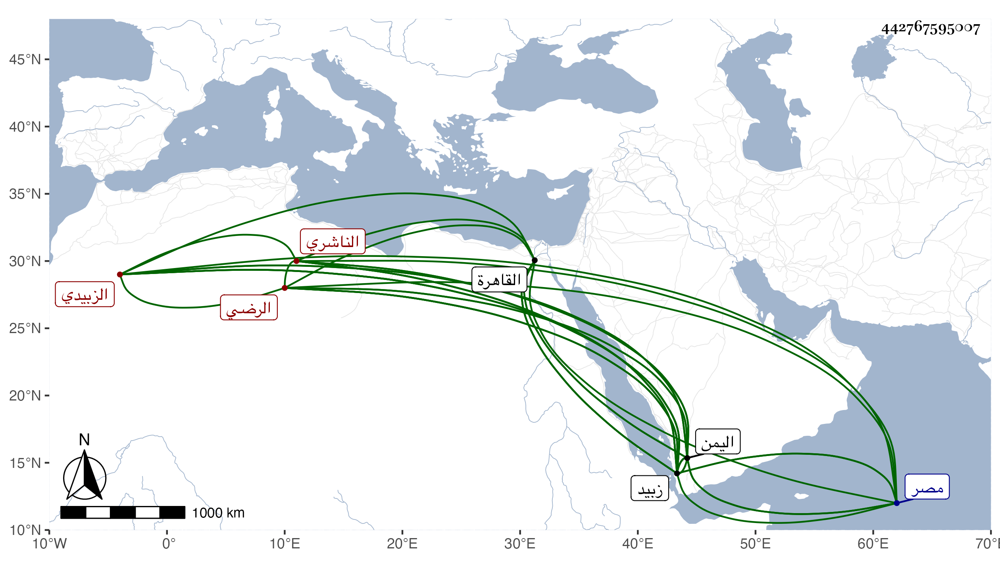

0902Sakhawi.DawLamic.ITO20230111-ara1.EIS1600.442767595007
Biography ID: 442767595007
260
أبو بكر بن أبي المعالي بن عبد الله الرضي الناشري الزبيدي . ذكره شيخنا في معجمه فقال قدم القاهرة صحبة فاخر الطواشي سفير الأشرف بن الأفضل فرافقنا في رجوعه إلى زبيد وكان حسن المذاكرة سريع النادرة على ذهنه فضائل وفوائد وهو من بيت كبير أنشدني لنفسه لغزا في هرون كتبته في التذكرة وأفادني عن بعض شيوخ اليمن وبلغني في سنة أربعين أنه حي وأنه يتعاطى بعض الشروط عن قضاة اليمن ولعله جاز السبعين وذكره العفيف الناشري فقال الفقيه الأجل الأوحد الفاضل الخير الكامل الرضى أبو بكر بن أبي المعالي ابن محمد بن أبي المعالي طلب العلم واشتغل في شبابه بالسياحة ودخل مصر وغيرها ولقي الشيوخ وكان عمي الشهاب أحمد كثير الثناء عليه بسرعة الفهم وجودة الذكاء ولكنه ترك الاشتغال وولى كتابة الشرع بزبيد مع حسن خط واقتدار على استنباط المعاني الجليلة في الخطب والمساطير بل كان وحيد وقته في الفرائض ممن قيد وضبط قرأ عليه جماعة وولي تدريس السيفية بزبيد . مات سنة إحدى وعشرين وأمه عائشة ابنة أبي بكر بن علي الناشري . قلت وقد ذكره المقريزي في عقوده باختصار ولم يؤرخ وفاته ويحرر قول شيخنا أنه حي في سنة أربعين .
